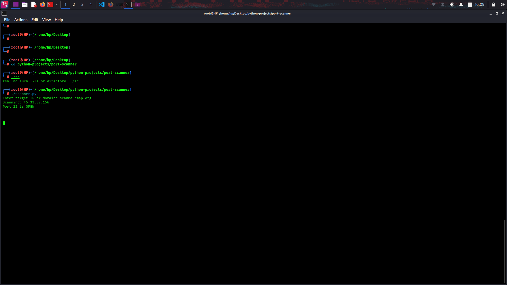

A custom Python-based TCP Port Scanner designed to identify open ports and active services on target systems using socket programming and networking concepts. This project helped strengthen foundational skills in networking, reconnaissance, and offensive security workflows.
The primary goal of this project was to understand how network reconnaissance works by scanning target ports, identifying open services, and learning how systems expose services over TCP connections.
Scanning Target: 192.168.1.1 [+] Port 22 OPEN [+] Port 80 OPEN [+] Port 443 OPEN

Successfully developed a custom TCP Port Scanner capable of identifying open ports and understanding how systems expose services through network communication.
🚀 View on GitHub